Reisebericht · Italien
Befahrung des Tibers
380 Kilometer allein im Kanu, von Sansepolcro bis ans Meer. Geschrieben für die, die es nach mir versuchen.
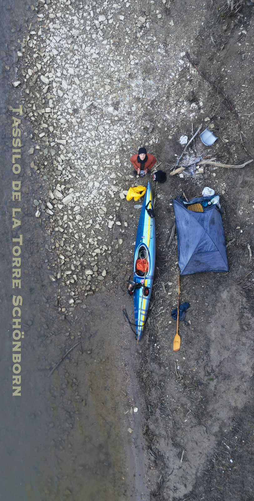
Im Frühling 2023 bin ich die ganze befahrbare Strecke des Flusses Tiber alleine mit dem Kanu abgefahren. Von Sansepolcro bis zum Meer war ich insgesamt 12 Tage auf dem Kanu unterwegs, um die 380 km zurückzulegen.
Vieles über den Fluss war mir unklar. Reiseberichte über den ganzen Fluss fand ich keine, niemand hatte die ganze Strecke befahren und dokumentiert. Die 380 Kilometer, die ich abfahren wollte, waren daher voller Stellen, bei denen ich kaum wusste, was auf mich zukommt.
Einen Bericht fand ich, zufälligerweise auf Deutsch, der die ersten 140 km grob beschrieb. Zu den letzten 240 km fand ich fast nichts. Dieser Reisebericht ist dafür gemacht, Leuten, die zukünftig den Tiber abfahren wollen, ein gewisses Bild zu machen von dem, was ihnen bevorsteht. Ich werde versuchen, so genau wie möglich das Wichtigste anzugeben, was hoffentlich jemandem die Reiseplanung und Reise etwas erleichtert.
Zur Ehrlichkeit gehört das hier: Ich war für diese Kanutour extrem schlecht ausgestattet, da ich der Umwelt und des Geldes wegen keine Einkäufe machen wollte. Meine Kleider waren ein Gemisch aus Ski-, Wander- und Stadtkleidung, hauptsächlich Baumwolle, und absolut nicht für eine Kanutour geeignet. Noch wichtiger, das Kanu: ein uraltes Teil, das ich einer 88-jährigen Frau abgekauft hatte und das schon viel durchlebt hatte. Es hielt anfangs tapfer durch, doch schon am zweiten Tag hatte ich immense Leck-Probleme und habe insgesamt drei Rollen Klebeband verbraucht. Die vielen Probleme, die aufgrund des fehlenden Materials entstanden, haben die Reise bestimmt länger gemacht, als sie hätte sein müssen. Insgesamt habe ich 12 Tage gerudert, mit Transport und Reise 16 Tage, in zwei Etappen aufgeteilt. Der Plan, es alles auf einmal zu machen, scheiterte, da kalte Temperaturen, ein stark beschädigtes Kanu, fehlendes Material und ein Unfall es nicht erlaubten.
Der Fluss
Der Tiber ist der grösste Fluss Zentralitaliens und mäandert 405 km durch Emilia-Romagna, Toskana, Umbrien und Latium. Die Landschaft ändert sich sehr in seinem Flussverlauf, vom kleinen Bergfluss zum grossen, breiten Tieflandfluss.
Er wird streckenweise befahren, doch der Grossteil ist fast menschenleer. An den Flussseiten sind gelegentlich kleine Dörfer zu finden, weshalb Nahrung und Wasser relativ leicht zu holen sind. Zwischen den Dörfern sind viele Kilometer Landwirtschaft, Wald und Hügel, fast komplette Menschenleere. Am Fluss war bei meiner Befahrung wenig menschliche Aktivität, mit Ausnahme von einzelnen Fischern hier und da. Man ist auf diesem Fluss sich daher selbst überlassen.
Die Befahrung des Tibers ist recht anfordernd. Ich empfehle, sie zu zweit oder in einer Gruppe zu machen und davor schon gewisse Erfahrung gemacht zu haben. Der Tiber hat 2 bis 3 Stellen, an denen Wildwasser Stufe III erreicht wird, meistens ist es Stufe I oder II. Vor allem die ersten 170 km haben sehr tückische Stellen, Wehre und viele Stromschnellen. Technisches Können ist notwendig, denn eine falsche Reaktion kann mit Kentern oder Schlimmerem enden. Ich will niemandem die Befahrung des Tibers ausreden, der Fluss ist wunderschön und es lohnt sich auf jeden Fall. Man muss sich nur bewusst sein von dem, was einem bevorsteht.
Jahreszeit und Temperaturen
Die erste Etappe von Sansepolcro bis zum Lago di Corbara habe ich Anfang April gemacht. Die Temperaturen waren tagsüber um die 10 Grad, in der Nacht fielen sie bis zu minus 5. Ich hatte zwar nicht das richtige Material dafür und habe in und ausserhalb meines 5-Grad-Schlafsackes gefroren, doch selbst mit dem richtigen Material empfehle ich, wenn möglich, etwas wärmere Monate abzuwarten.
Im Mai, wo ich die Strecke Lago di Corbara bis Ostia gemacht habe, waren die Temperaturen schon viel angenehmer. Das ist auch wichtig, da es schwerer wird, in dieser Strecke Feuerholz zu sammeln, auf welches man bei solchen Temperaturen oft angewiesen ist, zumindest in meinem Fall.
Man darf niemals die Wettervorhersage der Städte nehmen und denken, dass es am Fluss genauso sein wird. Am Fluss ist es immer um einige Grad kälter.
Wasserqualität
Ich habe dank der NGO A Sud ein Wasserqualität-Test-Kit dabei gehabt und habe das Wasser regelmässig auf Phosphat, Nitrat und Ammoniak getestet und die Wasserleitfähigkeit und den pH-Wert gemessen. Die Werte habe ich für die NGO dokumentiert.
Insgesamt kann man sagen, dass die Wasserqualität im ganzen Flussverlauf, zumindest bei diesen Werten, gut ausfällt. Es ist natürlich von Tag zu Tag anders, und ich empfehle niemandem, das Flusswasser zu trinken. Vor allem in Rom ist das Wasser verschmutzt, aufpassen. Haushaltsmüll ist in vielen Abschnitten des Flusses zu finden. Je mehr Menschen in der Umgebung leben, desto wahrscheinlicher ist es, ihn in grossen Massen zu sehen. Immer aufpassen, wo man die Füsse hinstellt, wenn man im trüben Wasser geht, um sich nicht aus Versehen zu verfangen. Dies ist jedoch nicht sehr wahrscheinlich. Das Wasser habe ich zum Kochen verwendet und habe keine Probleme gehabt.
Zelten
Es gibt viele schöne Steinbänke bis zum Lago di Corbara. Danach würde ich vom Zelten auf Steinbänken, vor allem auf Inseln, extrem abraten, da das Wasser bei Dammöffnungen rasant ansteigt. Ausserdem gibt es dann auch einfach nicht mehr so viele, da die Dämme diese unter Wasser verschwinden lassen. Ab Corbara findet man genug Plätze am Ufer.
Wenn man ein Feuer zündet, unbedingt darauf achten, dass es sich nicht ausbreiten kann, und vorm Gehen komplett ausmachen. Lasst bei euren Zeltplätzen nichts zurück, was davor nicht da war.
Fischen
Wer gerne fischt, wird die ersten 100 km des Tibers lieben. Der Fluss ist hier kristallklar und voller grosser Fische, die bis zu drei Hände gross werden können. Man sieht sie massenweise vom Kanu aus. Danach wird der Fluss breiter, und Fische sieht man keine mehr, da der Fluss tiefer wird. Doch die Fischer an den Flussufern deuten darauf hin, dass auch hier was gefangen werden kann.
Wo anfangen
Meine Reise begann in Sansepolcro, der ersten Stelle, an der der Tiber genug Wasser für eine Befahrung trägt. Ich empfehle aber nur bei hohem Wasserstand hier zu starten, da man sonst viel treideln muss. Von Città di Castello aus gibt es mehr Wasser, und von hier startet auch die DIT, die Discesa Internazionale del Tevere, die einige Abschnitte des Tibers befährt. Den Ort würde ich empfehlen.
Ich verlinke den Bericht von Steve Flusswanderer, der die Strecke von Città di Castello bis Lago di Corbara und einen Abschnitt von Rom sehr gut dokumentiert hat. Da sind auch die Stromschnellen dieser Strecke genau gekennzeichnet: flusswandern.at/tiber
Die Strecken
| Erste Etappe, Anfang April | ||
|---|---|---|
| Tag 1 | Transport Rom bis Arezzo | 4. April |
| Tag 2 | Transport Arezzo bis Sansepolcro | |
| Tag 3 | Sansepolcro bis Grotta di Montone | 38 km |
| Tag 4 | Grotta di Montone bis Ponte Pattoli | 30 km |
| Tag 5 | Ponte Pattoli bis San Martino in Campo | 25 km |
| Tag 6 | San Martino in Campo bis Montemolino | 41 km |
| Tag 7 | Montemolino bis Lago di Corbara | 22 km |
| Tag 8 | Abreise | |
| Zweite Etappe, Mai | ||
|---|---|---|
| Tag 1 | Hinreise | |
| Tag 2 | Lago di Corbara bis Alviano | 22 km |
| Tag 3 | Alviano bis Ocriculum | 35 km |
| Tag 4 | Ocriculum bis Stimigliano Scalo | 30 km |
| Tag 5 | Stimigliano Scalo bis Damm von Nazzano | 27 km |
| Tag 6 | Damm von Nazzano bis Settebagni | 34 km |
| Tag 7 | Settebagni bis Stazione Magliana | 39 km |
| Tag 8 | Stazione Magliana bis Porto di Ostia, Heimreise | 30 km |
Erste Etappe
Tag 1 und 2 · Transport
Am Mittwoch, 4. April 2023, hat mich Giovanni von Blablacar, einer Carpooling-App, mit dem 4 m langen Kanu nach Arezzo gebracht. Den Umweg nach Sansepolcro, von wo ich starten wollte, konnte er nicht machen, da er rechtzeitig in Bologna sein musste. Er hat mich daher um 20:30 in Ruscello gelassen, circa 7 km von Arezzo, wo ich zwischen Olivenbäumen gezeltet habe.
Am nächsten Tag früh aufstehen, 7:30 startklar. Es fehlten noch mehr als 40 km bis nach Sansepolcro. Der Kanuwagen hatte einen kaputten Reifen vom gestrigen Schieben, weshalb ich mit Autostopp gehen musste, um mir einen neuen zu besorgen. Danach bin ich lange mit dem Kanu die Strasse Richtung Sansepolcro entlanggegangen, mit dem Finger ausgestreckt. Einmal wurde ich kurz, 3 km, von einem Laster mitgenommen. Nach einigen Stunden Gehen entschied ich mich, es mit dem Bus zu versuchen. Drei Busse kamen vorbei, keiner wollte mich mit dem Kanu mitnehmen.
Kurz nach dem dritten Bus hielt eine Dame an und fuhr mich ein paar Kilometer weiter nach Palazzo del Pero. Ich erfuhr von ihr, dass der Cerone, ein Zufluss des Tibers, durch dieses Dorf fliesst, und entschloss mich, dem Zufluss zum Tiber zu folgen. Ich wollte einfach nicht mehr gehen. Der Fluss trug so wenig Wasser, dass ich das Kanu nur über die Steine geschoben und getreidelt habe, und als ich gegen 18:00 nach drei Stunden auf dem Cerone die Karte anschaute, musste ich feststellen, dass ich sehr langsam vorankam und so ein paar Tage für die 30 km bis zum Tiber dauern würde.
Deshalb hob ich inmitten von nichts das Kanu aus dem Wasser. Ich war auf einer ganz leeren Strasse, kein Auto weit und breit, die nicht benutzt wurde, da über das Tal eine Autobahn gebaut wurde. Ich war bereit, vollgepackt die nächsten 30 Kilometer bis nach Sansepolcro zu gehen, und war dabei, mich in die Mentalität zu stecken. Nach einer halben Stunde Gehen kam ein Auto vorbei, und eher aus Reflex streckte ich den Finger aus. Das Auto hielt, und Paolo, die Rettung des Tages, stieg aus und fuhr mich nach Sansepolcro, was gar nicht auf seinem Weg war. Um 19 Uhr etwa waren wir da, kurz vor Sonnenuntergang. Ich habe mir am Fluss einen Zeltort gesucht, Bohnen am Feuer aufgewärmt und geschlafen.
An diesem Tag hat meine Luftmatratze ein Loch gekriegt, und ich würde sie erst in drei Nächten reparieren können.
Ich empfehle eine leichtere Transportart, wenn möglich, zu wählen. Wenn man ein faltbares Boot hat, kommt man am leichtesten nach Città di Castello. Sansepolcro ist schwer zu erreichen. Was ich tat, war die einzige Option, die ich hatte.
Tag 3 · Sansepolcro bis Grotta di Montone, 38 km
Endlich am Tiber. Um 6:30 aufstehen und Haferflocken mit Marmelade frühstücken. Es war sehr kalt, um die 3 Grad. Als das Kanu fertig war, ging es flussabwärts weiter. Ich hatte gehofft, ab hier paddeln zu können, doch der Wasserstand war sehr tief, weshalb ich erneut barfuss durch eiskaltes Wasser das Kanu schieben musste. Es war die reinste Tortur.
Der Zusammenfluss des Cerone mit dem Tiber war der Punkt, an dem der Tiber genug Wasser für eine normale Bepaddelung haben würde. Hier habe ich erneut die Wasserqualität getestet, und auch der Zustand des Cerone war ganz gut. Ein paar Kilometer später kam Città di Castello, hier traf ich ein paar einheimische Kanufahrer an, und kurz danach kam die künstliche Stromschnelle. Die ist je nach Wasserstand befahrbar, ich konnte sie bepaddeln, wurde aber komplett nass. Kurz darauf folgen zwei weitere, die bei normalem Wasserstand befahrbar sind.
Ab 18 bis 19 Uhr habe ich begonnen, nach einem Zeltplatz zu suchen, doch die Stellen, die sich anboten, hatten wenig Platz oder Abflussleitungen, die enorm stanken. Der Fluss ist an den meisten Stellen sehr steil am Ufer, und gute Steinbänke gibt es wenige, weshalb ich frierend, nass und mit einem Kanu voller Wasser kurz vor Dunkelheit einen Ort fand, der einen guten Eindruck machte.
Zur Strecke: Der Fluss ist ganz klar und voller grosser und kleiner Fische, er wirkt sehr gesund. Gefährliche Stromschnellen gibt es hier keine, aber es gibt Stellen, an denen man das Kanu kompliziert durch kleine Stromschnellen führen muss, bis zum Zufluss des Cerone. Vor Città di Castello ist ein paar Kilometer Rückstau, dahinter 3 künstliche Stromschnellen, und danach viele kleine. Konzentration ist erforderlich. Der Fluss ist hier noch sehr schmal, weshalb die Sonne wegen der Vegetation kaum durchscheint, es ist also immer etwas kälter als rundum. Der Tiber ist hier noch fast ein Bergfluss mit kaltem, kristallklarem Wasser.
Tag 4 · Grotta di Montone bis Ponte Pattoli, 30 km
Es war extrem kalt, weshalb ich mir ein Feuer machte. Das Kanu hat wegen des langen Transportes und des Treidelns im niedrigen Wasserstand jetzt schon Lecks, gestern war das Kanu am Abend voller Wasser. Ich repariere die Lecks mit dem Ducttape, welches ich rein zufällig eingepackt habe, sehr zu empfehlen, und bin dann gegen 10 losgefahren, durch wunderschöne Natur. Ich habe mich wie in Alaska gefühlt.
Vor Umbertide ist ein Fischerpark, und es liegen grosse Steine im Fluss. Man konnte sie nicht befahren, weshalb ich hier kompliziert auspacken und umtragen musste. Die rechte Seite war beim Wasserstand die einfachste, man muss aber vorsichtig sein.
Danach kam Umbertide, wo der Rückstau des nächsten Dammes schon spürbar war. Beim Damm habe ich auf der rechten Seite, bei der Zentrale, das Kanu ausgehoben, und da diese abgesperrt war, musste ich lange gehen, bis ich eine Stelle fand, an der der Fluss erreichbar war. Die Stelle, an der ich das Kanu wieder ins Wasser trug, kann ich gar nicht empfehlen. Es gibt nämlich einen Höhenunterschied von 8 bis 9 m zwischen Feld und Fluss, steil und mit allen möglichen Pflanzen bewachsen. Mit Bändern habe ich das Kanu am Hang hinabgeführt, ohne Bänder ist dieses Manöver nicht möglich. Und danach bin ich selber hinabgeklettert.
Umtragen am Damm von Umbertide: ca. 5 km Rückstau bis Umbertide. Vor Umbertide Steinwurfwehr, Umtragen rechts. 2 bis 3 km später der Damm von Umbertide. Ich empfehle, anders als ich, links auszusteigen. Rechts ist der Zugang zum Fluss sehr kompliziert.
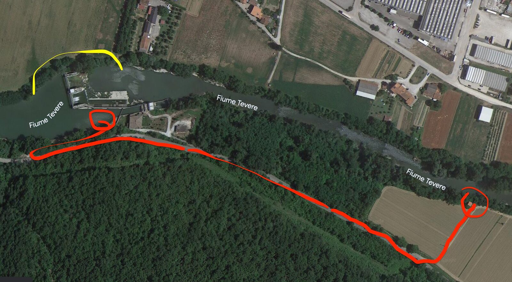
Damm von Umbertide. Die rote Strecke ist nicht empfehlenswert, die gelbe ist besser." loading="lazy" decoding="async">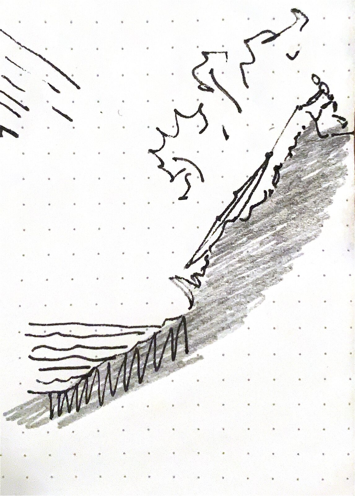
Danach wurde weitergepaddelt durch eine wunderschöne Strecke mit vielen Schnellen, bis ich gegen 18:00 bei einer Steininsel ankam. In der Nacht hat es gewittert.
Tag 5 · Ponte Pattoli bis San Martino in Campo, 25 km
Der nächste Morgen war wie üblich extrem kalt. Ich bin für die Konditionen nicht korrekt ausgerüstet, und die niedrigen Temperaturen setzten mir ordentlich zu. Mein Schlafsack ist für 5 Grad gemacht, doch die Temperaturen sind in der Nacht so kalt, dass ich komplett bekleidet schlafe: Skiunterwäsche, T-Shirt, Pullover, Jacke, Schal und Mütze, und dennoch friere ich.
Die nächsten Kilometer Rückstau bis zum Damm von Villa Pitignano, bei dem ich das Kanu über die Dammkante gehoben habe, was mir langes Umtragen erspart hat.
In den nächsten paar Kilometern muss man Ausschau halten, einige Stellen sind mit dem Kanu schwer zu befahren. Eine Stelle liegt kurz vor der Brücke von Ponte Felcino, in meinem Fall war der Wasserstand hier hoch genug für eine Befahrung. Vor allem bei Pretola muss man vorsichtig sein, denn die Reste der Brücke bei Torre di Pretola machen eine Befahrung kompliziert. In meinem Fall war wenig Wasser da, doch auf der linken Seite war eine Linie, die befahrbar war. Auch nach Ponte Vallecepi liegen Steine im Wasser, Ausschau halten.
Bis Ponte San Giovanni ist erneut ein sehr langer Rückstau, daher keine Strömung. Beim Damm habe ich links ausgetragen, da hier ein Lidl direkt am Fluss ist. Nachdem ich wieder Proviant hatte und das Rad meines Gepäckwagens geflickt hatte, trug ich das Kanu über Ponte Nuovo Vecchio und dann am rechten Ufer über Ruinen und Dickicht wieder ins Wasser.
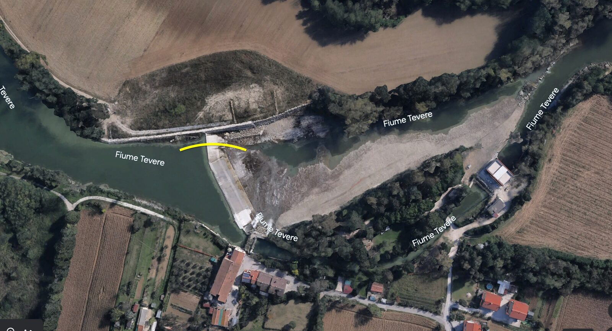
Damm von Villa Pitignano. Bei niedrigem Wasserstand lässt sich das Kanu über die Dammkante heben, das erspart langes Umtragen." loading="lazy" decoding="async">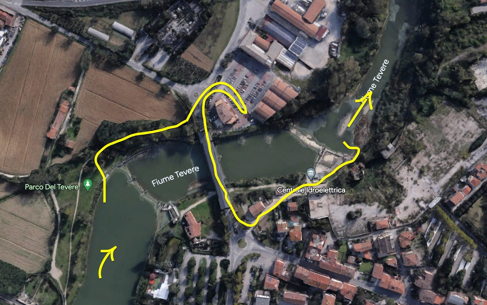
Umtragen beim Damm von Ponte San Giovanni. Links austragen: direkt am Fluss liegt ein Lidl, gut zum Auffüllen des Proviants." loading="lazy" decoding="async">Der Fluss verläuft danach lange recht gerade, nur bei der zweiten Brücke nach Ponte San Giovanni, bei Romano di Sotto, ist eine Stromschnelle, die je nach Wasserstand nicht befahrbar ist und die eine sehr schlechte Fahrlinie bei meiner Befahrung hatte. Auf jeden Fall kurz halt machen und sie sich genauer anschauen.
Beim Holzsuchen habe ich recht nah den Kadaver eines Hundes gefunden. Die eine Seite der Schotterbank hatte daher eine sehr verweste Luft, der Wind wehte aber mir zugunsten.
Tag 6 · San Martino in Campo bis Montemolino, 41 km
Unglaubliche Kälte frühmorgens. Die Sonne dringt erst spät bis zum Fluss ein und ist meist zu tief in dieser Jahreszeit, um durch die Bewachsung zu scheinen. Das Ergebnis ist, dass die Flüsse meist einige Grade kälter als die normale Umgebung sind.
Ich paddle erst gegen 11 los, muss aber nach weniger als einer Stunde halt machen, um mein Kanu zu flicken. Das Kanu ist extrem beschädigt und voller Brüche, viel Wasser sickert hinein.
Beim Ponte Nuovo ist unter der Brücke eine Stelle, die man nicht befahren kann, da schnelles seichtes Wasser und grosse Steine es unmöglich machen. Ich habe das Kanu links durchtreiben können. Was folgt, sind viele Kilometer ohne Hindernisse, wo der Tiber langsam durch Umbrien mäandert.
Habe hier zum ersten Mal ein 40-10-System angewandt, was ich weiterempfehlen kann: 40 Minuten ohne Pausen rudern und dann 10 Minuten ruhen, sehr effektiv.
Umtragen am Damm von Montemolino: Aufpassen, rutschig. Die ganze Dammwand ist mit glitschigen Algen bewachsen, an denen man leicht ausrutscht, wie ich es tat. Je nach Wasserstand mag es gescheiter sein, das Kanu am Ufer auszutragen und es erst später wieder einzusetzen.
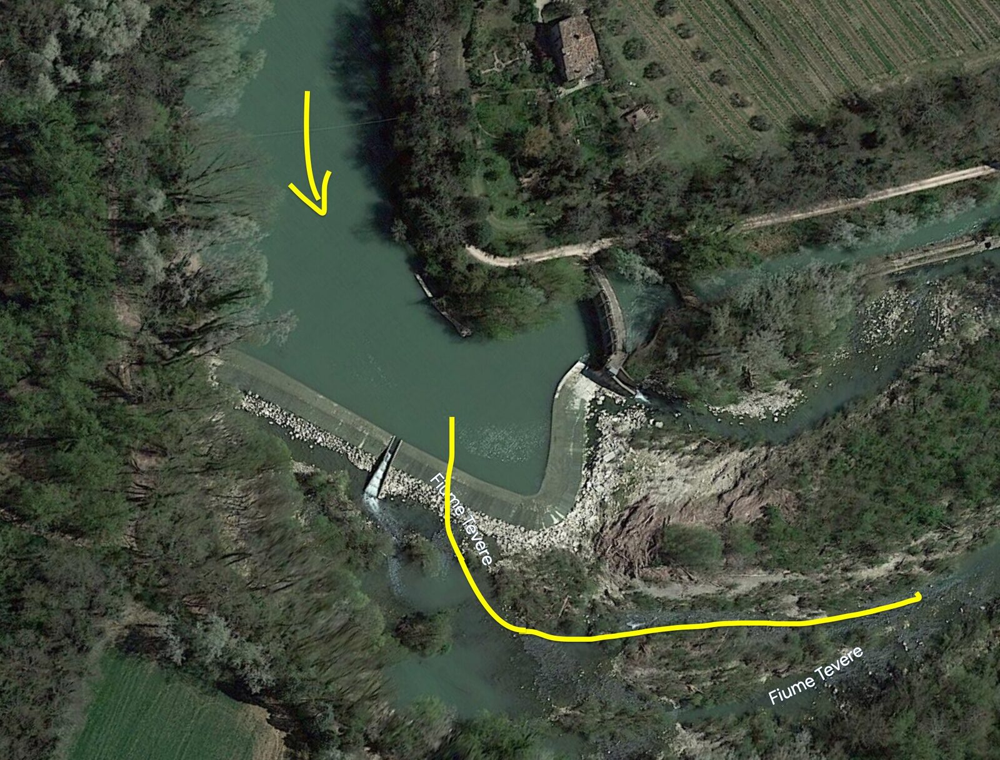
Umtragen beim Damm von Montemolino. Aufpassen, die ganze Dammwand ist mit glitschigen Algen bewachsen." loading="lazy" decoding="async">Die darauffolgenden Kilometer hat der Fluss wenig Wasser, da es umgeleitet und später zurückgeführt wird. Ein gutes Stück muss man hier das Kanu daher treiben und schieben. Dieser Abschnitt hatte extrem wenig Strömung, vor allem die 15 km vor Montemolino beruhen auf Muskelkraft.
Tag 7 · Montemolino bis Lago di Corbara, 22 km
Heute extrem schlecht geschlafen, mein Körper ist erschöpft vom schlechten Schlaf, harten Konditionen und schlechtem Essen. In Pontecuti habe ich kurz halt gemacht, um Wasser aufzufüllen und in der Hoffnung, mal was Ordentliches zum Essen zu finden. Habe die letzten Tage ausnahmslos Brot, Snacks, schlechte Pasta und Dosenfutter gegessen. Essen fand ich keines.
Was folgte, hatte ich gar nicht erwartet. Ich sah in der Weite grosse Wellen, ca. 1,5 m oder höher, doch entschied mich gegen ein genaues Anschauen der Stromschnellen. Ich hatte mir einen Ruhetag am Lago di Corbara versprochen, und es fehlten nur noch wenige Kilometer. Ich wollte nur ankommen. Daher setzte ich mir die GoPro auf und vertraute meinem Können.
Mit dem schwer beladenen, beschädigten Kanu ist daher ein erschöpfter und hungriger Tassilo in Wildwasser der Stufe III gepaddelt. Später stellte ich fest, dass die Risse am Kanu die Fläche unter dem Sitz extrem wabbelig gemacht hatten, ich konnte daher auch nicht mehr gut turbulentes Wasser befahren, da Balancieren nun unmöglich war.
Die ersten Wellen konnte ich knapp erkämpfen, doch bei der letzten Welle war die Strömung zu stark und es zog mich hinein. Plötzlich war ich mit dem Kopf unter Wasser. Ich habe noch gedacht: komme ich hier raus? Man muss sich vorstellen, dass ich alle Sicherheitsmechanismen des Kanus, die Lufttaschen vorne und hinten, ausgebaut hatte, um das Gepäck besser zu verteilen. Ich sass fest eingeklemmt im Kanu, mit einer Tasche zwischen den Beinen, vollen Wasserflaschen an den Schenkeln, oben noch eine Spritzdecke und darüber eine Bambusstange. Helm und Schwimmweste hatte ich keine dabei. Die Frage war daher berechtigt.
Ich schaffte es knapp, mich aus dem Kanu zu reissen, und drehte das Kanu gerade noch rechtzeitig um, bevor es zu voller Wasser war. Die GoPro hatte der Fluss mir vom Kopf gerissen, und so legte ich meine ganze Hoffnung auf das Kanu. Die Rückströmung fing an, mich erneut Richtung Welle zu ziehen, die Strömung war stark und es blieb mir nicht viel Zeit. Strampelnd kämpfte ich mich gegen die Strömung Richtung Ufer, und hatte irrsinnig viel Glück, denn ich konnte mich an einen Ast ziehen und so das Kanu und mich retten.
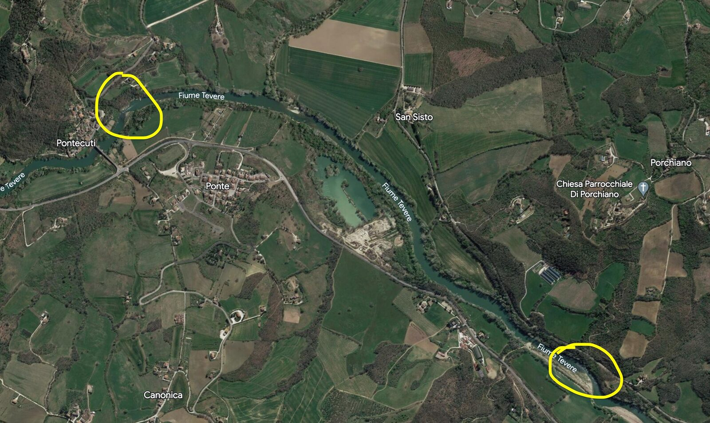
Die beiden Stromschnellen mit Wildwasser der Stufe III zwischen Pontecuti und dem Lago di Corbara. Hier bin ich gekentert. Zwei Steinplatten verengen den Fluss, deshalb werden die Wellen so hoch." loading="lazy" decoding="async">Es war, wie immer, weit und breit niemand, der mir hätte helfen können.
Ich war kurz davor, einfach ins eiskalte Wasser zu springen, um die GoPro zu suchen. Gott sei Dank tat ich es nicht, nur die Temperatur und die Strömungen hätten mich erledigt. Stattdessen habe ich ein System ausgetüftelt: Ich band einen schweren Stein an ein schwimmendes Objekt, mit 6 Metern Schnur, und warf es vom Kanu aus ins Wasser, um die Tiefe des Flusses herauszufinden. Der Stein berührte den Boden nicht, es waren immer mehr als 6 m. Ich wusste daher, die GoPro war verloren.
Zur Strecke: Von Montemolino bis Pontecuti gleichmässige Strömung von ca. 2 km/h, danach kommen die zwei Stromschnellen, die so hoch werden, da zwei Steinplatten dem Wasser wenig Platz zum Durchfliessen bieten. Kurz nach der ersten kommt eine ähnliche, auch WW III, die nur bei viel Erfahrung, richtiger Ausrüstung und in Begleitung befahren werden sollte. Die nächsten Kilometer bis zum Stausee haben keine Strömung. Bis zum Lago di Corbara wird man am Tiber immer genug Treibholz für ein Feuer finden, doch die Strecke danach nicht mehr.
Tag 8 · Abreise
Am nächsten Morgen stieg ich früh aus dem Zelt, um ein Feuer zu zünden und so der Kälte zu entkommen. Bei einer der Feuer-Such-Aktionen fand ich ein grosses Geweih. Ich hatte mich nach der langen Nacht entschieden, die Expedition zu pausieren, und es schien fast, als wäre die Krone eines Hirsches meine Belohnung für meine vielen Opfer.
Gegen 14 Uhr habe ich alles gepackt und fuhr Richtung Corbara. Es waren vielleicht 3 km bis zum gegenüberliegenden Ufer, wo ich anlegte und mein Kanu im Dickicht versteckte und halb begrub. Von dort aus musste ich lange gehen, beladen mit drei Taschen, Zelt, Topf und Geweih, am See entlang nach Corbara und danach Richtung Orvieto. Nach ein paar Stunden Gehen war Autostopp erfolgreich. In Orvieto habe ich zuerst gegessen und dann eine Bahn nach Rom genommen. Um 9 war ich in Rom. Vor einer Woche war ich losgefahren.
Zweite Etappe
Tag 1 · Hinreise
Wandere gegen 20:00 nach einem halben Tag in Orvieto Richtung Corbara, mit dem Daumen ausgestreckt. Autostopp funktioniert hervorragend, drei Leute nehmen mich mit, ich bin kurz nach Sonnenuntergang am Lago di Corbara und muss noch 45 Minuten wandern bis zum Kanu. Es war noch da.
Tag 2 · Lago di Corbara bis Alviano, 22 km
Gut geschlafen, am Morgen gute Temperaturen. Es regnet erneut, und ich warte die Nässe im Zelt ab. Als der Regen kurz aufhört, packe ich zusammen und fahre los. Ein Unwetter naht, und es donnert gewaltig, weshalb ich früher als geplant das Kanu aus dem Wasser nehme, auf der rechten Seite des Sees. Schiebe das Kanu auf einem erneut kaputten Wägelchen einige Kilometer weiter, bis kurz nach dem Damm.
Während der Vorbereitungen kommt der Wächter des Dammes vorbei und war ganz erschrocken, als ich ihm von meinem Vorhaben erzählte. Zum Glück hat er mich gesehen, denn hätte er an diesem Tag beschlossen, den Damm zu öffnen, wäre es unglaublich gefährlich gewesen. Aufpassen.
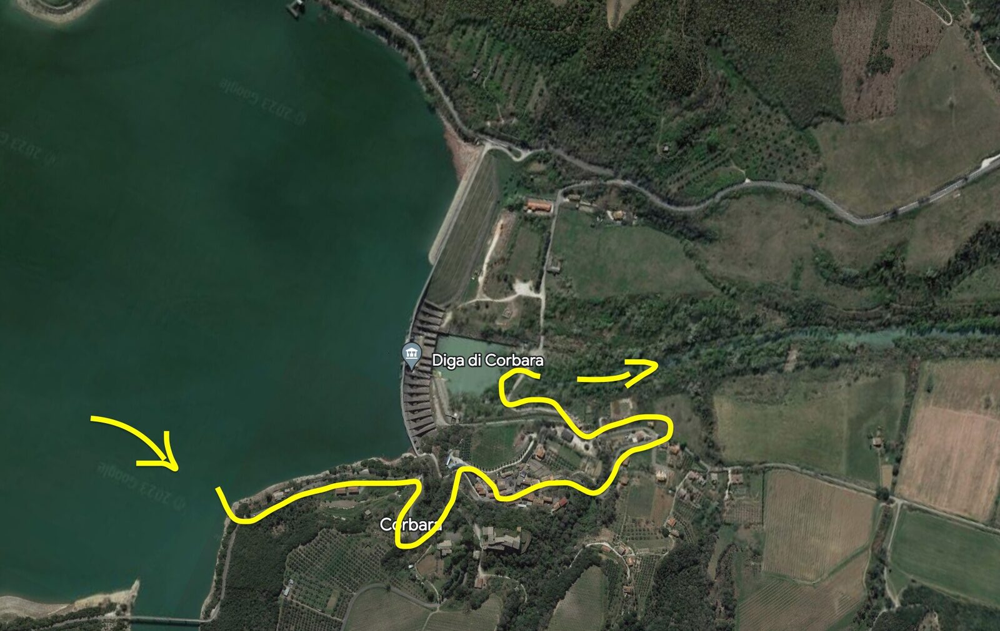
Umtragen beim Damm von Corbara. Vorsicht: wird der Damm geöffnet, steigt das Wasser innerhalb von Minuten um mehrere Meter." loading="lazy" decoding="async">Die nächsten ca. 10 km sind sehr schön, doch der Fluss hat extrem wenig Wasser, da es durch die Energiezentrale gepumpt wird. Man muss daher öfters aussteigen, um das Kanu an Stromschnellen vorbeizuführen. An einigen Stellen muss man komplizierte Kletterbewegungen machen, und an anderen echt riskante Durchführungen bei grossen Steinschnellen, wo man bis zur Hüfte oder mehr nass wird. Wenn möglich, diese Strecke zu zweit oder mehr machen, da ein falscher Schritt oder ein vergangener Fuss im dunklen Wasser leicht zu einem Unfall wird.
Gegen 2 oder 3 war ich bei Baschi und bin den steilen Hang auf Wildschweinwegen unter der Autobahn hochgeklettert, da ich kein Wasser hatte. Der Zugang zum Dorf ist sehr mühselig, empfehle eher etwas früher auszusteigen. Die nächsten paar Dutzend Kilometer wird es nämlich keine Möglichkeiten mehr geben, um sich in Flussnähe etwas zu besorgen.
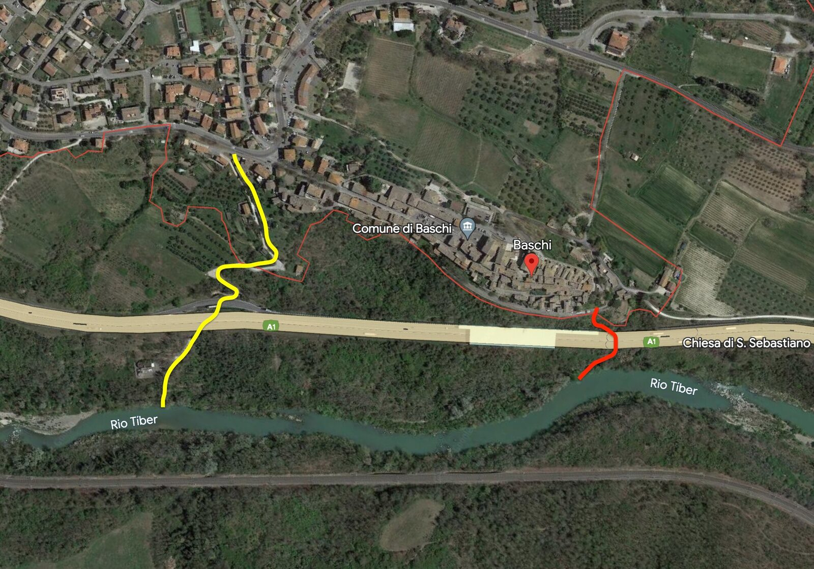
Der Weg nach Baschi vom Fluss aus. Der Zugang zum Dorf ist mühselig, besser etwas früher aussteigen. Danach gibt es viele Dutzend Kilometer lang keine Möglichkeit mehr, sich in Flussnähe etwas zu besorgen." loading="lazy" decoding="async">Tag 3 · Alviano bis Ocriculum, 35 km
Am Morgen erneut das Kanu reparieren. Als ich gegen 9 startklar war und direkt am Damm das Kanu ins Wasser lassen wollte, wurde der Damm plötzlich geöffnet. Binnen weniger Minuten war der Wasserspiegel um einige Meter gestiegen, und grosse Wellen entstanden im Fluss. Um diese zu umgehen, trug ich das Kanu ein paar hundert Meter weiter. Die Strömung war nun stark, und der Fluss sehr breit, weshalb ich schnell vorankam.
Beim Porto Romano di Seripola, einer schönen Ausgrabungsstätte der Römer, habe ich kurz halt gemacht. Es ist praktisch verlassen, und die Dächer sind am Zerfallen. Weiter ging es im Regen nach Orte, wo ich um 2 ankam. Die Stadt zu besuchen lohnt sich, hoch auf einem Hügel sitzend hat sie sehr schöne Bauten und tolle Aussichten. Irgendwie kam ich auch in die unterirdische Stadt, wo ich lange alleine erkundet habe. Sehr sehenswert.
Zurück beim Kanu bin ich bis 19:30 bis nach Ocriculum gefahren, einer alten römischen Stadt, von der noch einige Ruinen zwischen den Feldern sind. Habe hier bis in die Dunkelheit hinein erkundet, es ist wirklich unglaublich, mit riesigen Hallen und halb verschütteten Gängen. In der Dunkelheit habe ich dann alles zum Amphitheater getragen, wo ich übernachtet habe.
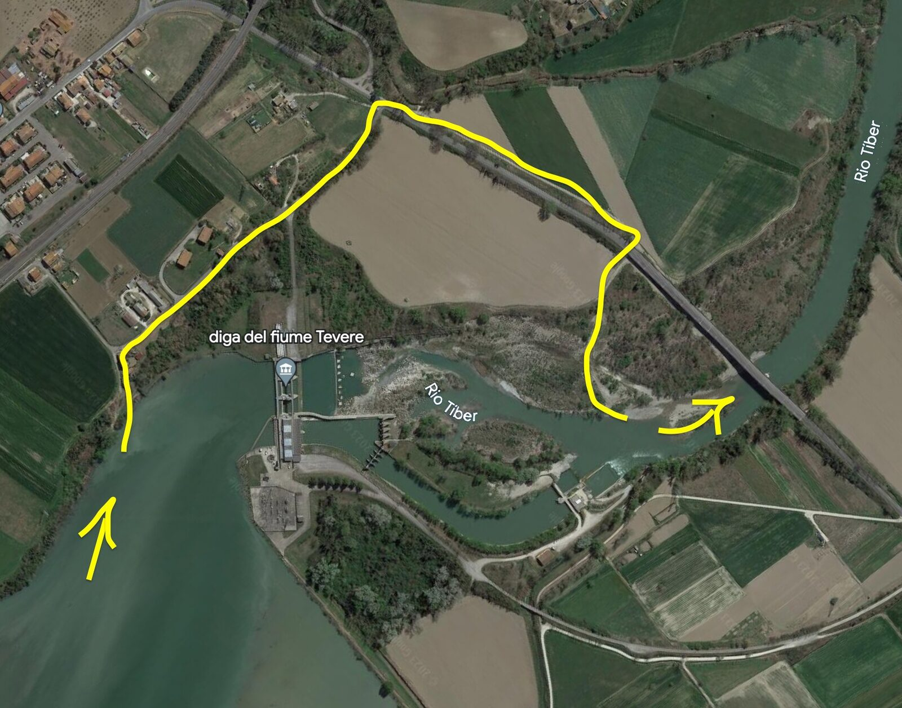
Umtragen beim Damm von Alviano. Am linken Ufer austragen." loading="lazy" decoding="async">Tag 4 · Ocriculum bis Stimigliano Scalo, 30 km
Wenige Kilometer später kam ein Damm in meinen Weg. Es handelt sich bei diesem Damm um einen Doppeldamm, der aber noch einen Tiberarm hat, der wenig Wasser führt. Ich dachte, dass es leichter wäre, etwas mit dem Kanu zu gehen, trug das Kanu daher am rechten Ufer aus und ging am Ende 4 km mit dem Kanu durch die Gegend. Das Wägelchen ist wieder kaputt. Insgesamt hat das Umtragen also 3 bis 4 Stunden gedauert.
Umtragen beim Damm Scalo Teverina: Ich kann nur empfehlen, rechts auszutragen und im Tiberarm weiterzurudern, es sollte genug Wasser fliessen. Es gibt sonst nämlich weit und breit keine guten Eintragstellen, und alles ist schwerer als Paddeln. Das Leichteste beim Kanutouren ist immer das Paddeln.
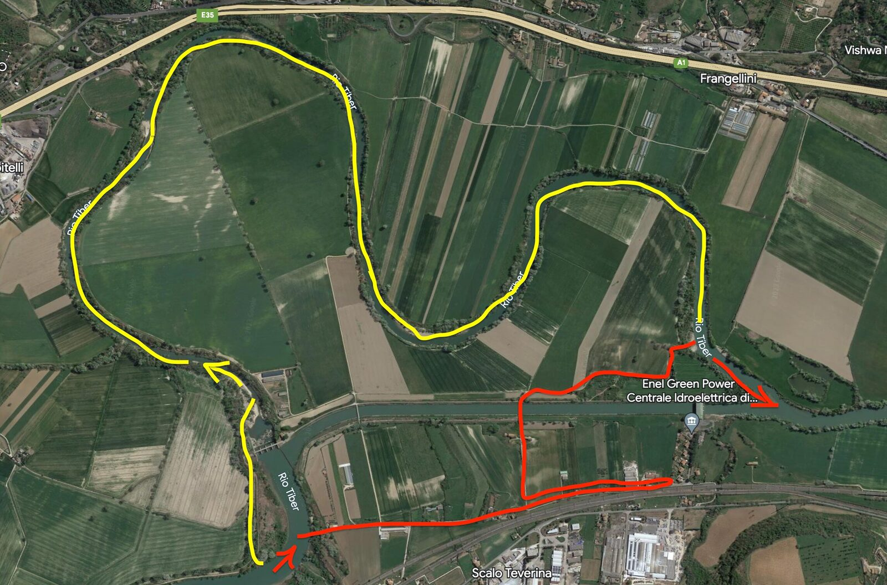
Umtragen beim Damm Scalo Teverina. Die gelbe Strecke ist die empfohlene, die rote ist extrem mühsam: 4 km zu Fuss mit dem Kanu." loading="lazy" decoding="async">Ziemlich bald kommt dann Ponte Felice, hier gibt es unter der Brücke grosse Wellen, die man mit einem Kanu eigentlich durchfahren kann. Da meines so kaputt war, entschied ich mich dagegen und habe es rechts, wo es weniger Strömung gab, durchgeschoben. Danach habe ich noch einen Stopp bei Torre dei Giacanti gemacht, wo die Ruinen einer alten Burg am Hügel sind, und eine tolle Höhle ist.
Tag 5 · Stimigliano Scalo bis Damm von Nazzano, 27 km
Das Kanu ist in einem erbärmlichen Zustand, und viele meiner Kleider, fast alle eigentlich, sind nass. Ich entschloss mich, mir den Vormittag zu nehmen, um die Kleider zu trocknen, und lief ein paar Kilometer in die nächste Ortschaft, Stimigliano Scalo, um Proviant und Ducttape zu kaufen. Es gab kaum Stellen am Kanu ohne Risse oder Löcher.
Erneut sehr wenig Strömung, die Kilometer vor Rom bestehen aus einem Rückstau nach dem anderen. Kurz nach Poggio Mirteto Scalo ist eine Filmkulisse am Fluss aufgebaut, die ich mir angeschaut und erklettert habe.
Umtragen beim Damm von Nazzano: Vor Nazzano viele Kilometer keine Strömung. Naturschutzgebiet, keinen Lärm machen. Zum Austragen ist der Steg des Parkhauses gut geeignet, es ist die einzige gute Stelle. Es handelt sich erneut um einen Doppeldamm.
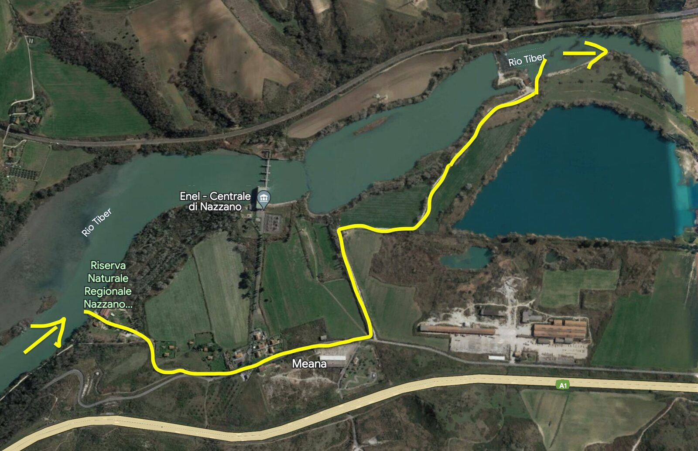
Umtragen beim Damm von Nazzano. Der Steg des Parkhauses am rechten Ufer ist die einzige gute Ausstiegsstelle. Naturschutzgebiet, keinen Lärm machen." loading="lazy" decoding="async">Tag 6 · Damm von Nazzano bis Settebagni, 34 km
Am nächsten Morgen hat dann ein Wächter, mit einem Stab bewaffnet, vorbeigeschaut und gefragt, was ich hier suche. Ich habe ihm versichert, bald zu gehen, was ich gegen 9:30 dann auch tat. Meine Hoffnung auf Strömung war vergebens, denn sie blieb fast vollkommen aus, maximal 1 bis 2 km/h. Ich zelte einmal kurz vor der Stadt Rom und morgen kurz dahinter, denn in einer Stadt zu zelten ist nie ideal.
Tag 7 · Settebagni bis Stazione Magliana, 39 km
Gegen 11:20 war ich beim Damm am Grande Raccordo Anulare. Ich bin rechts in die Zentrale gestiegen und musste erneut feststellen, wie schlecht Elektrizitätswerke in Italien bewacht werden. Ich fand auf dem Areal keinen guten Ausgang und paddelte weniger als 100 m zurück, bis ich an ein Privateigentum kam. Als ich dabei war, mein ganzes Zeug rüberzuheben, kam ein Fischer und fragte mich barsch, was ich da mache. Ich erzählte ihm, dass ich keinen anderen Ausstiegsort gesehen hatte, und er half mir, das Kanu über den Zaun zu heben, und empfahl mir einen Weg zum Fluss.
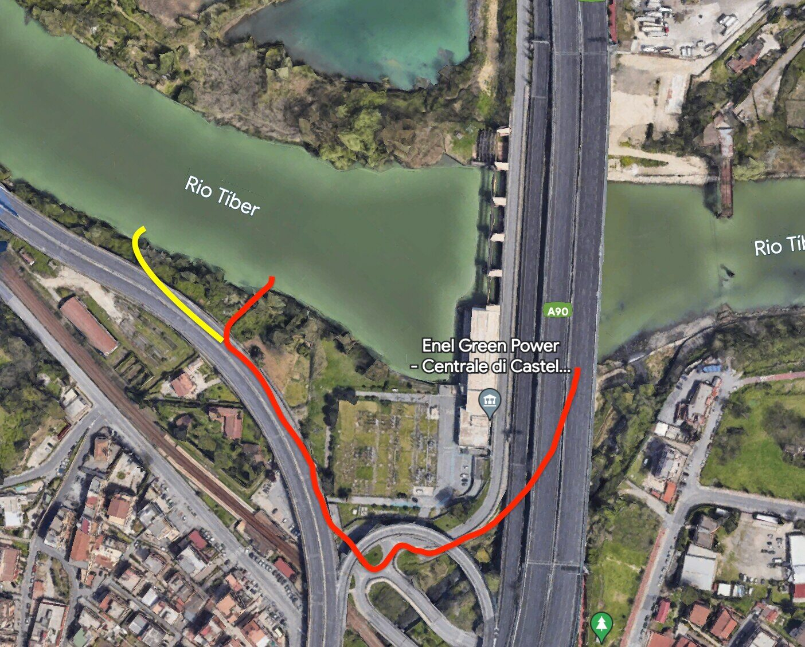
Umtragen beim Damm am Grande Raccordo Anulare, unter den Autobahnen von Rom." loading="lazy" decoding="async">Weiter ging es, mit wenig Strömung, durch Flusslandschaft, auch hier weit und breit niemand zu sehen, obwohl theoretisch schon in Rom. Viele Kilometer später komme ich am Zufluss des Aniene vorbei, ab hier kenne ich den Tiber. Kurz darauf Ponte Milvio, wo grosse Wellen waren, von denen ich den ersten Teil machte. Der weitere Teil war mir zu riskant, mein Kanu war mir nach den ganzen Schäden zu instabil für so ein Gewässer. Man kann die Wellen normalerweise gut befahren, auf jeden Fall aussteigen und anschauen, da der zweite Teil bei niedrigem Wasserstand sehr seicht ist.
Isola Tiberina: Bei der Insel auf dem Tiber muss man sich unbedingt links halten, da rechts eine sehr gefährliche Walze ist. Links kann man je nach Wasserstand durch, am besten die Linie davor anschauen. Die zweite Stromschnelle ist viel dubioser und kann sehr hohe Wellen haben. Sonst links umtragen.
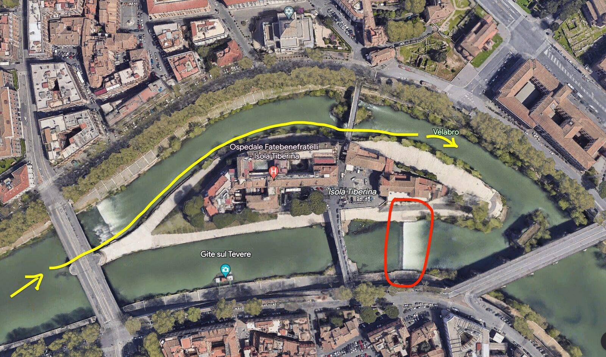
Isola Tiberina. Links befahrbar, rechts liegt eine sehr gefährliche Walze. Sonst links umtragen." loading="lazy" decoding="async">Um 19 kam ich an zwei Autos vorbei, die wahrscheinlich die Mafia ins Wasser gefahren hatte.
Tag 8 · Stazione Magliana bis Porto di Ostia, 30 km
Gegen 11 Uhr war ich bei der Abzweigung zum Kanal von Fiumicino, den die römischen Kaiser anlegen liessen, und folgte ihm, um mir die alten römischen Häfen anzuschauen. Beeindruckende Bauten, einige Gebäude sind noch nicht erkundet. Die Kirche am Fluss ist auch sehr schön.
Nach ein paar Stunden zurück zum Kanu, den Kanal zurückrudern und weiter bis nach Ostia Antica. Kanu angebunden, und die Ausgrabungen angeschaut, welche echt empfehlenswert und wunderschön sind. Extrem gut erhaltene römische Stadt. Im Norden ist die päpstliche Burg mit einem mittelalterlichen Dorf und einer sehr guten Pizzeria.
Ein Sturm hat sich genähert, weshalb ich gegen 17:40 die letzten Kilometer bis zum Meer zurücklegte. Endlich war ich angekommen. Danach habe ich die letzten Kilometer bis zum Porto di Ostia gemacht. Um 19:15 tat ich die letzten Paddelschläge und beendete eine Tour, die mich 380 km durch Mittelitalien bis ans Meer geführt hatte.
Ich war sehr müde, doch es fehlte noch viel bis nach Hause. Zuerst musste ich das Kanu bis zum Bahnhof von Ostia bringen, daher viele Kilometer gehen, mich dann in den Bahnhof schleichen und dann den Bahnführer überzeugen, mich mitzunehmen. Da sass ich mit meinem 4 m langen Kanu in der Bahn. Und dann erneut viele Kilometer zu Fuss, von der Station quer durch die Stadt. Ich kam komplett KO um Mitternacht an.
Die lange Reise war vorbei.
Kann eine Befahrung des Tibers jedem empfehlen.
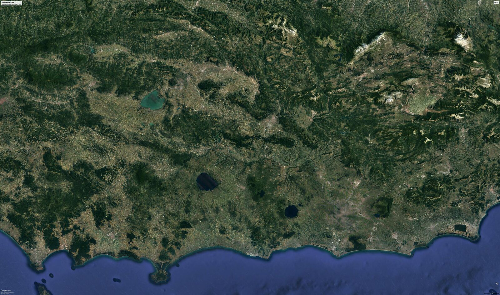
Die Tiber-Strecken mit den Zeltplätzen der gesamten Befahrung." loading="lazy" decoding="async">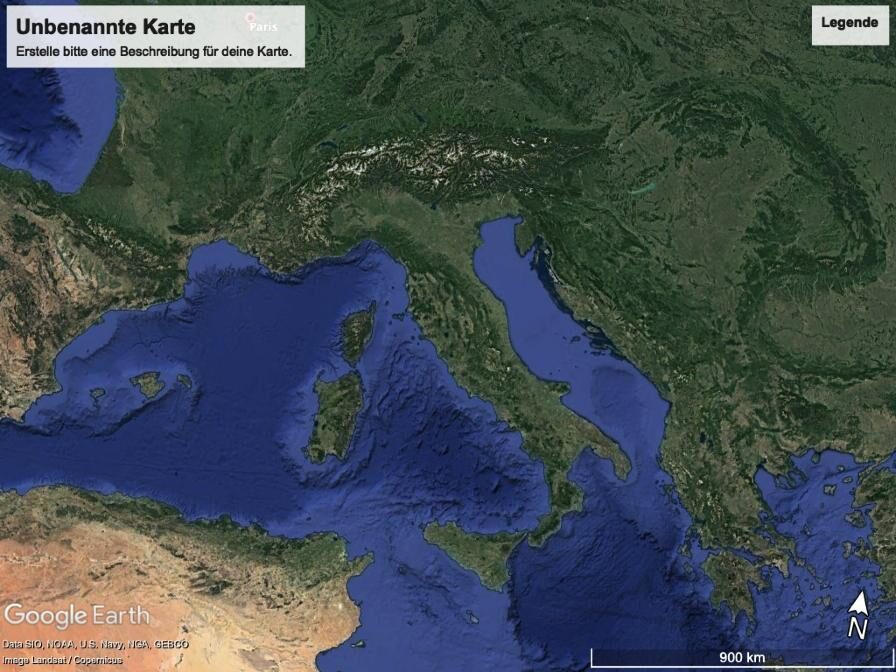
Packliste
| Kleider | Technik | Anderes | Essen |
|---|---|---|---|
| 3x T-Shirts 3x Pullover 2x lange Hosen 1x Badehose 3x Unterwäsche 1x Skiunterwäsche 1x Jacke 1x Regenjacke 1x Mütze 1x Schal 1x Hut 1 Paar Sportschuhe 1 Paar Skisocken |
3x Powerbanks GoPro mit Zubehör Drohne mit Zubehör SD-Karten Ladegeräte und Kabel 2x Taschenlampe 1x Kopflampe 1x Uhr |
2x Feuerzeug 1x Gaskocher 1x Kochtopf 1x Tuch 1x Angelzeug 2x Ducttape 1x Sonnencreme 1x Waschzeug 1x Seife 1x Schnur 1x Zelt 1x Schlafsack 1x Notizheft 2x Stifte 1x wasserfeste Handyhülle 1x Messer 1x Wasserqualität-Testmittel 1x Kanu 1x Paddel 1x Schutzdecke 1x Kanuwagen 6x 3 m Bänder |
16x Müsliriegel 2x Proteinriegel 2 Tafeln schwarze Schokolade 1 kg Schwarzbrot 2x Erbsen (Dosen) 2x Ceci (Dosen) 2x Bohnen (Dosen) 1 kg Mandeln 1 kg getrocknete Aprikosen 1 kg Haferflocken 1 kg Erdnüsse 1 kg Rosinen 1 kg Datteln 1 kg Pasta 1x Tomatensauce 1x Pesto 1x Anchovis 2x Marmelade 6x Äpfel |
Zu diesem Bericht gehören annotierte Luftbilder der Umtragestellen an den Dämmen von Umbertide, Villa Pitignano, Ponte San Giovanni, Montemolino, Corbara, Alviano, Scalo Teverina, Nazzano und dem Grande Raccordo Anulare, mit eingezeichneten empfohlenen und nicht empfohlenen Wegen. Wer den Tiber befahren möchte und sie braucht, schreibt mir einfach.